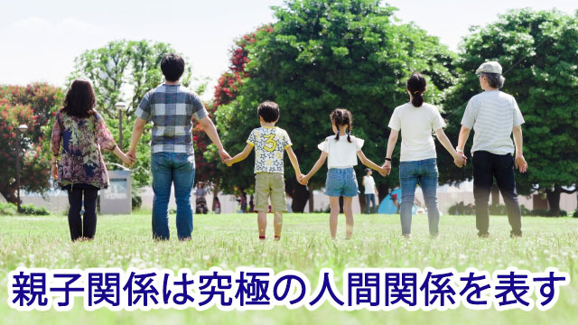

今回から3回にわたって親子関係が人間に及ぼす影響とその克服法についてお話したいと思います。
親子関係は究極の人間関係を表している。
そんなことを言う人がいるが私もこれは真実だと思う。
何と言っても人が生まれて最初にもつ人間関係は、親と自分との関係に違いないからだ。
親がどんな価値観をもって育てたか、それに対して子はどう反応しどう影響を受けたのか、その親と子のあり方は子どもの魂に深く刻まれ、その後の人間関係の基盤となるだろう。
たとえば、もしあなたが他人の顔色ばかりうかがって自分から行動できないタイプなら、親から「思い通りになるよう」コントロールされてきたのかも知れない。あるいは他人や兄弟（姉妹）と比較され続けてきたのかも知れない。
また、もし仕事などであなたが過度に根を詰めて、くたびれ果てるまで一生懸命にやり過ぎていたり必要以上に自分の正当性を主張するタイプなら、親に自分を認めてもらえなかったという思いが根底にあるのかも知れない。
あと、見落としがちなのは我が子との関係だ。もし、あなたが我が子の特定の言動に苛立ちや不安や恐れを覚えるなら、そこには過去の自分と親との関係が何らかの影響を及ぼしているかも知れないと考えてみて欲しい。
特に子どもが思春期を迎えるとなかなか親の言うことを聞かなくなる。そんな我が子に苛立ちや不安、焦りを感じる親は多いがそもそもなぜ苛立つのか、不安や焦りを感じるのか親自身が無自覚なことが多い。
少し考えて欲しい。
あなたに現在起こっている我が子とのあつれきが、過去において自分の親との間に生じた未解決の問題が背景にあるのなら、しばらくの間そこにスポットを当ててみることは意義のあることではないだろうか。
そういうわけで今回は親であるあなたが、我が子との関係をより良いものにし、ひいては我が子が健全に成長するためにどうあるべきか。それにはもう一度「自らの親との関係を振り返ってみる」ことも役に立つという観点から話してみたい。
尚この話は我が子との関係に限らない。他の人間関係にも応用できるので是非参考にして欲しいと思う。
親を6つのタイプに分ける
さて、話を分かりやすくするために親のタイプと子への影響を以下の6つに分けて考察してみる。
6つのタイプといっても、一人の親が複数の特徴を備えている場合もあるし父親と母親ではタイプが異なることもある。（たとえば父は厳しいが母は子に甘いなど…）
いずれにしても、子どもから見てどの特徴が強く自分に影響していたかは、子ども時代を思い出して主観的に判断してもらって構わない。
また自分がどのタイプの親になっているのか判断する際の参考にして欲しい。
１、 子への期待が強すぎる親
２、 厳しすぎる親
３、 他人と比較する親
４、 子を認めない親
５、 甘やかす親
６、 子を操る親
では順番に見ていこう。
まず１の「子への期待が強すぎる親」。
親なら多かれ少なかれ子どもに何らかの期待をもつものだと思う。
だから期待そのものが悪いというのではなく、その程度が問題だということで、これは他の5つの項目にも当てはまる。
我が子に成績であれ行動であれ期待しすぎる親というのは、要するに自分の理想を押しつけていることになる。子どもが自分の理想通りに振る舞うことを期待しているわけで、子どもにとってこれは結構な負担となる。
このような親に育てられた子どもの反応は２通りあって、１つは何とか親の期待に応えようと頑張るタイプ。２つめは期待に応えられないことで「自分には価値がない」と思い込むタイプだ。
前者は親の期待通りの優等生タイプになるが、長じて自分の殻を破れず窮屈な思いを抱いて生きることが多い。
後者は「親の期待を裏切った」という一種の罪悪感や無価値感を抱きやすい。
どっちにしても親の期待という重圧を受けてきた結果であるには違いない。
もしあなたの親が１のタイプであったなら、あるいは自分自身が１だと感じるなら次のように考えてみて欲しい。
親の期待とは所詮親の理想に過ぎず、その理想も現時点での世間の大部分が正しいと思っていることを上書きしているだけだったりする。
たとえば「一生懸命勉強して良い学校へ行って良い会社に行って欲しい」などはその典型といえる。
良い学校とはどんな学校なのか？
良い会社とはどんな会社なのか？
そもそもそれが本当に将来の幸福につながるのか？
そこを深く検証することもなく、ただ一般常識を鵜呑みにして子どもに押しつけているだけというケースが多い。
こう考えてみれば、親の押しつける理想といっても多くは世間的常識に基づく漠然とした損得計算であって、正しい真理でも何でもないことが分かるだろう。
さらに悪いことに、このタイプの親は自分の果たせなかった理想を無意識に子どもに託してしまっていたりする。
「子どものときもっと勉強しておけば良かった」
「もっと良い学校へ行っていたら違っていたかも…」など、今の自分の状況に対する不満を安易に子ども時代の「努力不足」のせいにしてその不足感を我が子への期待という形で肩代わりさせてしまう。
これは要するに自分が子ども時代にできなかったことを子どもにやらせようとしているわけで「親の身勝手子どもの迷惑」といえる。
だからこういう親に育てられた人は、いまこのことを知って「親の期待に応えられなかった自分が悪い」とか、常に人の期待に背かないように頑張らなければと考える必要はないことに気づいて欲しい。
ただ、親に少し同情的な言い方をするなら親も決して悪気があったわけでなく、子どもが少しでも有利な人生つまり子の幸せを望んでいたからこそ期待していたのだと理解し、そのことに感謝して背負わされた「期待という重荷」を降ろせばよい。
親もまた子どもに過度の期待を知らずしらず押しつけていないか、自らを省みることが大切だ。
そのためには子どもの足りないところではなく、足りているところすなわち長所や特性、得意なものに意識を向けていよう。
そこには希望がある。
期待は時に相手を追いつめるが、希望は可能性を広げてくれる。期待より希望の眼差しを向けることだ。
頑固オヤジは健在？
次に２の厳しすぎる親について話したい。
厳しいというのも色々あって、子どもの言動すべてに厳しく口を出すタイプなのか、特定の事柄すなわち勉強面だけは厳しい、または生活面のしつけに厳しいのか、家庭内のルールを守らせることに厳しいのかで違う。
だが「厳しすぎる」親には共通点があって、それは何らかのこだわりの強さをもっているということだ。
つまり「こうすべき」「ああすべき」が多い。特定の価値観や古い観念にコリ固まって、それに反する者を断罪する傾向があり、相手をトコトン追いつめかねない。
昔ならガンコ親爺（古い！）だが、確かにかつてはこんな親に逆らって子どもが勘当されるなんて時代もあった。
今はさすがにそこまで厳しい親はいないだろうがまったくいないわけではなく、自分の意にそぐわない行為や考えを厳しく退ける親も一定数見かける。
私がここで思い出すのは、子どもが高校受験をひかえたときある親が何と「公立1本しか受けるな」と言ったことだ。
ご存知のように公立高校は1校しか受けられない。しかもそこは地域ナンバーワンの公立高だった。当然落ちたら行くところはない。
いくら「スベリ止め」を受けさせてくれと頼んでも頑として受け付けない。「とにかく○○高1本で行け。落ちたら就職！」と譲らない。
「今どきこんな親がいるとは…」と驚いたが最終的には私が直接出向いて説得し、他の私立高も受けることができたが、こんな親も時々だが出現する。
この父親は地方育ちのせいか「公立に行くべき」という信念―こだわり―があったのだろう。
これは極端な例だが、自分の信念（こだわり）が強く子どものアレコレにダメ出しする親は意外にも社会的地位の高い人にも多い。
たとえば会社などで重要な地位にいる人は、自分の生き方に自信があるだけに相手の意見や考えに耳を傾けず、一方的に決めつけがちだ。我が子に対しても、まるで部下を扱うように高圧的にダメ出しをしてしまう。
当然こういう親の下で育つと、子どもの性格にもよるが鬱屈した心情を抱え、型にはまった硬直した考えの持ち主になるか、その反対に反逆者タイプになりやすい。
先の「公立1本で行け」と命令された子（男子）も、まさに後者の反逆タイプで学校でも塾でもわざとのように教師に逆らったり、問題行動を次々と起こしていたのを思い出す。
同じように潔癖症で癇性の強い母親に育てられた娘が、その反動として自由奔放すぎる行動に走る場合もよくある。これも一種の反逆で、親の強い束縛に対する反発心が根底にあるといえよう。
厳しい親の呪縛
反逆タイプも型にはまったタイプも、厳しい権威に対して表面的には反抗か従順かの真逆の反応に見えるが、どちらも「権威に対する怖れ」がある点では一致している。
だからもしあなたが、勤め先の上司や権威的に振る舞う人に強い反発を感じたり怖れたりするなら、自分の親が厳しすぎるタイプだったかもと思い返してみて欲しい。
その上で親の「こだわり」が何だったのかを探ってみること。もしかするとそのこだわりは、親も自らの成育歴の中で身につけさせられたものかも知れない。つまり親もその親から受け継いだ「厳しさ」を深く考えることなくあなたに向けていたのかも知れない。
そう考えれば親のこだわり＝信念も、必ずしも普遍的なものではなくいつでも従うべきものでも反発すべきものでもなかったと気づくだろう。
そうして親の呪縛から解き放たれることで自らの対人関係も改善されると思う。
ここまで厳しい親のネガティブな影響について見てきたが、一言つけ加えておきたい。
それは礼儀やマナーなど、人として最低限身につけておくべきことに対しては「しつけ」として親が厳しく教えておくことは必要だということ。
感じよく挨拶する。身の周りを清潔に保つ。人に迷惑をかけないよう公共のマナーは守る。人に親切にする。身勝手に振る舞わない…等。
このように親が限定的な範囲で子どもに厳しく接することは必要だし大切なことに違いない。
子どもに社会性を身につけさせ、最低限子どもが世の中で困らないようにするために幼児期からこのような「しつけ」は心がけるべきだと思う。（この点を誤解して子どもの好き勝手を容認することが、子どもの主体性を尊重することだと思い込んでいる人が多い）
要するに親は「厳しさ」を向ける方向を間違えないようにして欲しい。人間としての品位や最低限の礼儀・マナーを守ることに厳しさを発揮し、勉強面や趣味、嗜好友人関係など自分で学んでいかねばならない領域にまで「こうすべき」を持ち込まず、色々言いたいことを飲み込んでも自由に放っておく勇気をもつことだ。
私の個人的考えかも知れないが、子どもに厳しく当たりすぎる親は信念の持ち主というより、偏ったこだわりに囚われている人が多い。つまり硬直した思考の持ち主で「我」が強いのだ。
表面意識では「子どものため」と考えているかも知れないが、子どものことより自分のアイデンティティを守ることのほうを大事にしているように見える。
つまりは本当の自信がない。頑固（厳しさ）という鎧で自分を守っているだけではないか。
もしあなたが「子どもには厳しくすべきだ」という信念の持ち主なら一度このことを十分考えてみて欲しい。
以下次回へ